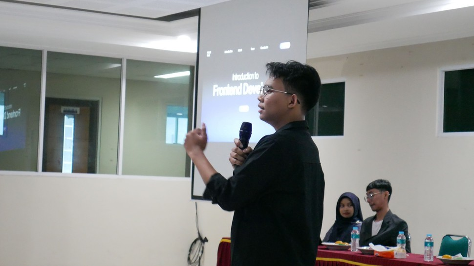
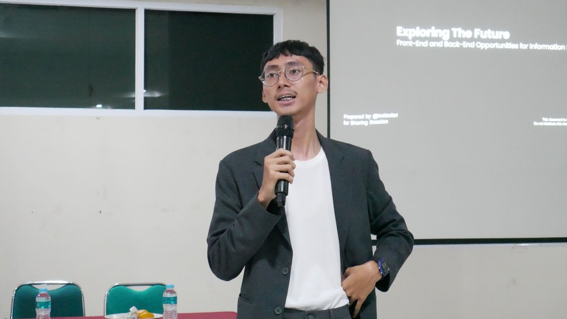

SHASTECH VI: Exploring the Future — Front-End & Back-End Opportunities for Information Systems
Universitas Pamulang kembali menunjukkan komitmennya dalam mengembangkan wawasan teknologi mahasiswa melalui kegiatan Sharing Session Technology (SHASTECH) ke-VI yang digelar pada 6 November 2025. Dengan mengusung tema “Exploring the Future: Front-End & Back-End Opportunities for Information Systems”, acara ini menjadi ruang inspiratif bagi mahasiswa untuk memahami peluang dan tantangan di dunia pengembangan sistem informasi modern.
Acara tahunan yang diselenggarakan oleh Himpunan Mahasiswa Sistem Informasi (HMSI) Universitas Pamulang ini digelar di Aula Universitas Pamulang dan dihadiri oleh puluhan peserta dari berbagai angkatan. Dua narasumber profesional, yaitu Vega dan Faishal Zufari, membagikan pengalaman berharga mengenai perjalanan karier, keahlian penting, serta tren teknologi yang berkembang pesat di dunia industri.
Dalam sesi pertama, Vega Anggara menekankan pentingnya kreativitas dan pemahaman user experience (UX) bagi seorang front-end developer. Ia menjelaskan bahwa antarmuka yang menarik dan mudah digunakan merupakan elemen kunci dalam keberhasilan sebuah aplikasi. “Menjadi front-end developer bukan hanya soal menulis kode, tapi bagaimana memahami pengguna dan menghadirkan solusi yang membuat mereka nyaman,” ujarnya.
Pada sesi kedua, Faishal Zufari membahas sisi back-end development yang meliputi logika sistem, keamanan data, dan efisiensi server sebagai pondasi utama aplikasi. “Tanpa back-end yang kuat, aplikasi tidak akan berjalan stabil,” tuturnya. Ia juga menekankan pentingnya kolaborasi antara front-end dan back-end untuk membangun sistem yang saling melengkapi.
Sesi tanya jawab berlangsung interaktif dengan banyak pertanyaan seputar peluang kerja di dunia IT, tantangan dalam pemrograman, hingga perkembangan teknologi masa depan. SHASTECH VI juga menjadi ajang untuk mempererat hubungan antara mahasiswa, alumni, dan dosen.
Dengan terselenggaranya kegiatan ini, HMSI berharap mahasiswa semakin termotivasi mengasah kemampuan baik di bidang front-end maupun back-end, serta berani mengeksplorasi peluang baru di era digital.